时尚新风潮
20世纪20年代
张爱玲是民国时期的传奇才女，她对旗袍情有独钟。她不仅在小说中细腻地描写旗袍，自己也常穿着旗袍出席，她喜欢用一些大胆的色彩和独特的图案，将自己的才情与个性融入其中，她所穿的旗袍也成为了当时海派时尚的代表，展现出民国女性追求自由与个性的精神。

 

张爱玲是民国时期的传奇才女，她对旗袍情有独钟。她不仅在小说中细腻地描写旗袍，自己也常穿着旗袍出席，她喜欢用一些大胆的色彩和独特的图案，将自己的才情与个性融入其中，她所穿的旗袍也成为了当时海派时尚的代表，展现出民国女性追求自由与个性的精神。